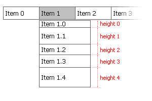

|

The height of selected menu item in pixels. This parameter can be used to adjust the vertical size of
the menu item to the length of the text (for example if some items have two lines of text),
paddings and HTML elements inside it. This allows efficient vertical space utilization.
This setting is applied to currently selected item only. When changing this parameter in
- Tigra Menu PRO in vertical blocks make sure to adjust the vertical offset of the next item in the block (if any).
Without that taller item will be partially covered by next item and shorter item will have a gap next to it;
- Tigra Menu PRO in horizontal blocks make sure to adjust the height of other items int the same block (if any).
Without that block will not appear rectangular;
- Tigra Menu GOLD this parameter is only available in vertical blocks. Use Block Height
to locally redefine the height of horizontal block.
By default the width is inherited from the level settings
|